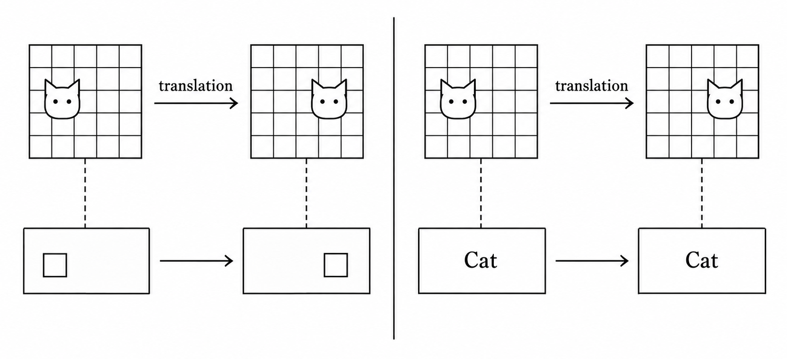
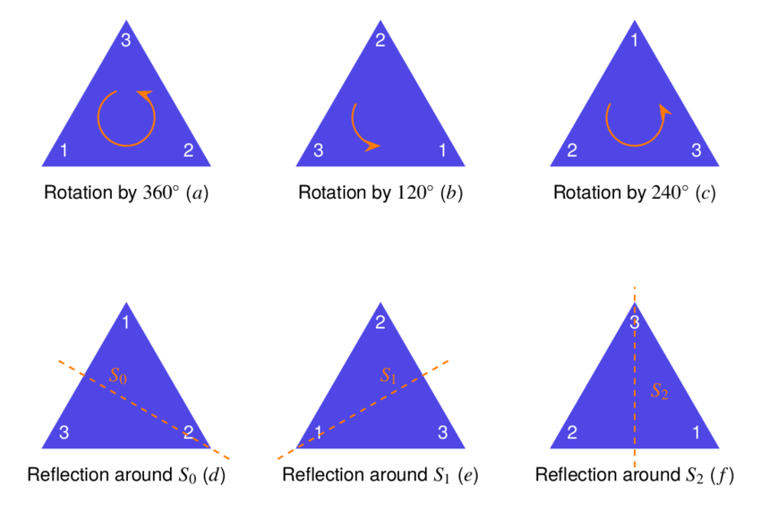
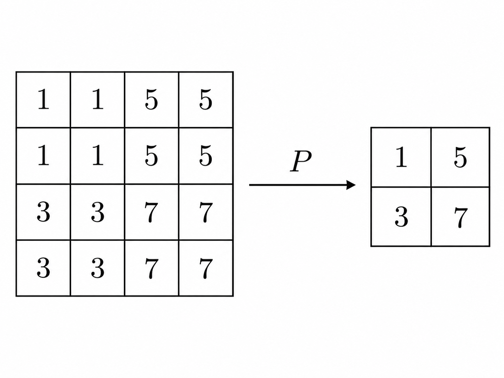

AI Newsletter #02 – Geometric Deep Learning
1. Introduction
Can we derive the neural network architectures from mathematical properties we want it to satisfy, rather than solely relying on engineering intuition? And can such a construction help explain why certain architectures work so well?
In this second CAIS newsletter, we explore these two questions through the lens of Geometric Deep Learning (GDL), a mathematical framework for understanding neural networks through the underlying structure of data. Our primary goal is to show how one of the most influential architectures in deep learning, the Convolutional Neural Network (CNN), can be mathematically derived from simpler geometric principles, and subsequentially explore what this tells us about the broader future of deep learning.
2. Real-world data has structure
There are a lot of deep learning architectures with more and more architectures being invented every week. Each are engineered for different tasks, with different advantages and properties. This vast quantity of architectures can make it extremely difficult to understand why they work and the relations between them.
There is a veritable zoo of neural network architectures for various kinds of data, but few unifying principles. [1]
In their proto-book [1], Bronstein et al. highlight this problem, but also offer a solution: A framework to systemize neural architectures and construct them from geometric regularities. They call it Geometric deep learning (GDL). The idea of GDL rests on an observation in deep learning that the data we care about in the real world isn’t just a collection of random numbers. Instead, it possesses structure, like symmetry, geometry, and other mathematical structures, because it originates from our physical world.
The following is a very import example of this which we will come back to over and over again, so make sure it feels intuitive!
Consider the task of imagine classification where we want to classify cats in images. A physical property could be as simple as recognizing that an object (like a cat in an image) remains the same object whether it is in the top-left corner or the bottom-right corner of the image. This is something that is intuitive for us humans, but not as intuitive for machine learning systems. In traditional deep learning, images are treated as flat grids of pixels, and while architectures like regular Multilayer Perceptrons (MLPs) doesn’t necessarily fail at recognizing a translated cat, it doesn’t enforce any particular relationship between recognizing a cat at one position and recognizing it at another. So it must learn this relationship from data, and so we need more data for this architecture to perform better.
Now imagine a network that detects a particular feature of a cat, such as its ears. If we shift the entire image to the right, we would intuitively expect the network’s detection of those ears to shift to the right as well. The feature of an ear has not changed, only its location. This is the idea behind a geometric property called translation equivariance, which means that translating the input should translate the corresponding output feature maps in the same way. Notice that this is slightly different from what we described in the previous paragraph, and from what we ultimately want in image classification. The final prediction, “cat”, should remain unchanged by translation, a property called translation invariance. But within the network architecture, we want to preserve the location of detected features. This is why translation equivariance is such a useful architectural property, and as we will see, Convolutional Neural Networks (CNNs) are translation-equivariant, and can be derived from translation-equivariant layers.

In the framework of GDL, this explains why CNNs are so good at image tasks: They satisfy certain geometric regularities that is very natural to image data. In GDL, regularities refer to geometric properties that we already know are true about the data before the model even starts training. Translation invariance and translation equivariance are only two examples. Some other common regularities which we won’t dive into are rotation invariance/equivariance and permutation invariance/equivariance.
Not only could this allow us to incorporate prior knowledge into neural networks, derive architectures from mathematical principles, and construct more efficient models, but in the long-term lead, it might lead to a shared mathematical framework to study architectures in. It could help explain why some architectures generalize better than others, and help us move deep learning closer to a physical science, rather than just a field of engineering.
3. Mathematical foundations of GDL
3.1 Data domains and signals
Since we want to embrace and utilize the structure within datasets, we want to move away from thinking of data as arbitrary vectors in Euclidean space \(\mathbb{R}^{d}\). Instead, we view data as signals \(x:\Omega\to{}\mathcal{C}\), defined over a data domain \(\Omega\) and mapping into a channel space \(\mathcal{C}\). Some concrete examples are:
- For images: \(\Omega=\mathbb{Z}^{2}\), describing a 2D grid, while \(\mathcal{C}=\mathbb{R}^{3}\), describing RGB values. So the signals \(x:\mathbb{Z}^{2}\to{}\mathbb{R}^{3}\) describe a mapping where each pixel at \((i,j)\in{}\mathbb{Z}^{2}\) receives three values \((R,G,B)\in{}\mathbb{R}^{3}\).
- Relevant tasks: Image classification, object detection.
- Physical structure and priors: Translation, rotation.
- For graphs: Let \(G=(V,E)\) be a graph, consisting of vertices \(V\) and edges \(E\). Then \(\Omega=V\), \(\mathcal{C}=\mathbb{R}^{d}\), and signals \(x:V\to{}\mathbb{R}^{d}\) describe a mapping where each node \(n\in{}V\) gets assigned a particular feature or value. For example, in a molecular graph, nodes could be atoms and edges chemical bonds, and signal could assign to each atom its charge, atomic number, mass number, and so on.
- Relevant tasks: Molecule generation, predicting whether a molecule possesses certain physical properties, social (user-user relation) recommendations, detecting span accounts.
- Physical structure and priors: Locality, node permutation.
- For manifolds: Let \(M\) be a smooth two-dimensional surface. Then, \(\Omega=M\), \(\mathcal{C}=\mathbb{R}\), and signals \(x:M\to{}\mathbb{R}\) describe a mapping where each point on the surface \(p\in{}M\) gets assigned a scalar value (e.g., assigning a temperature on the surface of Earth, represented as a sphere \(M=S^{2}\)).
- Relevant tasks: Weather prediction, protein folding.
- Physical structure and priors: Locality, metric structure describing distances and curvature.
So when we refer to “samples” or “data points” in GDL, we really mean mappings from the data domain to the channel space. The dataset will then be a set of signals, denoted: \[\mathcal{X}(\Omega,\mathcal{C}):=\{ x:\Omega\to{}\mathcal{C} \}.\] This is a way for us to represent data. However, the prior or physical structure comes not merely from the type of the signals, but from the structure we impose on their domain and from how the architecture respects that structure. All of these notions such as “imposing structure” and an architecture “respecting that structure” will be made precise soon.
To give another example of what these geometric regularities might look like. Consider a task on graph data where we want to predict a molecule’s net charge. Our data domain is a graph where vertices are atoms and edges are chemical bonds between atoms. Every atom (or node in our graph) gets assigned a feature vector containing two chemical properties, namely its atomic number and electrical charge. To feed a molecule into a computer algorithm, we are forced to store the signals in matrices. Take a concrete molecule, like \(H_{2}O\), which has three atoms. In a matrix, we might index the two hydrogen atoms first, or the oxygen atom first (or another combination). However, matrix multiplication is not commutative, so for a naive MLP, we might get completely different predictions of properties depending on the ordering of the indexing when we store the atoms as signals in our matrix. This could correspond to absurd physical logic, where, say, a molecule is predicted to be toxic when read from left-to-right, and not toxic when read from right-to-left. Stepping back, we desire a regularity called permutation invariance, meaning that changing the order of the way in which we store the atoms, should not change the final prediction! This is a symmetry because the process of permuting the atoms shouldn’t change the prediction.
3.2 Group theory in GDL
We will now begin formalizing parts of the story we’ve told so far, and we will begin with the concept of “symmetry”. The regularities we have mentioned so far (like translation equivariance) has to do with the concept of symmetry. Symmetry refers to a certain transformation on an object, such that it leaves it unchanged.
Now, the plan is to describe these symmetries in general, and then derive architectures from constraints that respect them. So how do we describe symmetries mathematically? We use groups, specifically, symmetry groups!
A group is a set \(G\) together with a binary relation \(*:G\times G\to{}G\), which we can denote as a structure \((G,*)\), such that: 1. For any two elements \(g,h\in{}G\), \(g*h\in{}G\). 2. \(*\) is associative, meaning that for any \(g,h,f\in{}G\),\[(g*h)*f=g*(h*f).\] 3. There exists a special element \(e\in{}G\), called the identity, such that for any \(g\in{}G\),\[g*e=e*g=g.\] 4. For every element \(g\in{}G\), there exists an element \(g^{-1}\), called its inverse, such that\[g^{-1}*g=g*g^{-1}=e.\]
In our context, a symmetry group is a concrete group consisting of elements that are real-world transformations, acting on specific objects or mathematical spaces. The most intuitive examples is the symmetry group of an equilateral triangle, which consists of 6 transformations that correspond to 6 motions that map the triangle onto itself:

3.3 Understanding equivariance
Using our knowledge of groups we will now give a mathematically rigorous definition of both equivariance and invariance. Groups allow us to describe symmetries generally (whether it is translations, rotations, or permutations), and so we will define a notion of “group equivariance” and “group invariance”. Then, we will see how we derive the convolution operation used in CNNs purely from translation-equivariant linear maps.
Recall our cat example from section 1. An image can be represented as a signal \(x:\Omega\to\mathcal C\), where \(\Omega=\mathbb Z^2\) is a two-dimensional grid of pixel coordinates and \(\mathcal C=\mathbb R^3\) represents the RGB values at each pixel. We want to describe the transformations that shift an image horizontally or vertically. These transformations form a specific group \(G=(\mathbb Z^2,+)\). An element \(g=(a,b)\in G\) represents a translation by \(a\) pixels horizontally and \(b\) pixels vertically. The group operation is addition (performing two translations corresponds to adding their displacement vectors). The identity is \(e=(0,0)\), and every translation \(g=(a,b)\) has an inverse \(g^{-1}=(-a,-b)\) that moves the image back to its original position.
Up until now, we haven’t actually formalized how this group transform an image. All we’ve done is defined the structure of the symmetry itself, not how that symmetry acts on the image data we’re interested in. For this, we introduce a group action. Informally, a group action describes how the elements of a group act as transformations on some space. In our case, we want to specify how translations act on images.
We denote this action by \(\rho\), and define it as: \[(\rho(t)x)(u)=x(u-t), \] where \(u\in\mathbb Z^2\) is a pixel coordinate and \(x:\mathbb{Z}^{2}\rightarrow{}\mathbb{R}^{3}\) is a signal.
This simply says that, to obtain the pixel value at position \(u\) in the translated image, we look at the original image at position \(u-t\). Consequently, the entire image shifts by \(t\).
Let \(G\) be a symmetry group. A function \(f:\mathcal{X}(\Omega,\mathcal{C})\rightarrow{}\mathcal{X}(\Omega,\mathcal{C})\) is \(G\)-equivariant if \[f(\rho(t)x)=\rho(t)f(x), \tag 1\] for all \(t\in{}G\). \(f\) is called \(G\)-invariant if instead \[f(\rho(t)x)=f(x), \tag 2\] for all \(t\in{}G\).
When we refer to translation equivariance (resp. invariance) we mean the notion of equivariance (resp. invariance) as defined above, but where the group \(G\) is the translation group \(G=(\mathbb Z^2,+)\).
In words, equivariance says that transforming the input and then applying the network must produce the same result as applying the network first and then transforming its output. Invariance says that transforming the input and then applying the network must produce the same result as simply applying the network, without any transformation.
When we say that a “model should respect the geometric regularity”, we are demanding that its architecture respects these sorts of conditions, such as (1) or (2). This brings us to the last central questions: What kinds of neural network layers satisfy these constraints? And how do we construct architectures that satisfy them?
As we will see, if we restrict ourselves to linear layers and require them to be translation equivariant, we arrive naturally at convolution layers. Then, we will compose multiple convolution layers, nonlinearities, and coarsening layers, and finally add a last invariant-map, which will give us the sort of architecture we initially desired in our cat example.
4. The blueprint of GDL
There are four main building blocks of the GDL framework, and we summarize them in the table below:
| Building block | Mathematical role | CNN interpretation |
|---|---|---|
| Linear equivariant map | Extract information from nearby points while respecting symmetries | Convolutional layers |
| Nonlinearity | Increase expresiveness | ReLU, Sigmoid |
| Coarsening (local pooling) | Construct a lower-resolution representation by combining nearby points | Local average/max pooling |
| Global invariant map | Produce an output unchanged by the chosen group action | Global average/max pooling |
We will now break these four building blocks down.
4.1 Linear Equivariant Map
Recall our cat example. If we translate the image, we want the detected features, such as the cat’s ears or its head, to translate in exactly the same way. This motivates constructing neural network layers that are equivariant to the transformations of our data.
The first building block of GDL is therefore a linear equivariant map: a linear transformation \(B\) that respects (See (1)) the action of a symmetry group (in our case, the actions of the translation group): \[B(\rho(t)x)=\rho(t)B(x).\] In the next section we will see that when we require a linear layer to be equivariant to translations, its mathematical structure is constrained to that of a discrete convolution.
4.2 Nonlinearity
Linear transformations alone are not sufficient to construct expressive neural networks. This is the same story that goes for any neural network; composing any number of linear transformations still produces a linear transformation, which in turn limits the kinds of functions the network can represent. We therefore introduce nonlinear activation functions, such as ReLU or sigmoid. We represent these as \(\boldsymbol\sigma:\mathcal{C}\rightarrow{}\mathcal{C}'\), applied element-wise: \[(\boldsymbol \sigma (x))(u)=\sigma(x(u)).\] Importantly, these nonlinearities preserve translation equivariance. Thus, we can introduce nonlinearity (which drastically improves the expressiveness of our network) without sacrificing the equivariance constraint we imposed on our architecture. For a quick proof of this, see below: \[\begin{align} (\boldsymbol\sigma(\rho(t)x))(u)&=\sigma((\rho(t)x)(u)) \\ &=\sigma(x(u-t)) \\ &=(\boldsymbol\sigma (x))(u-t) \\ &=(\rho(t)\boldsymbol\sigma (x))(u), \end{align}\] hence, we get that \(\boldsymbol\sigma\) is \(G\)-equivariant: \[\boldsymbol\sigma \circ{}\rho(t)=\rho(t)\circ{}\boldsymbol\sigma.\]
4.3 Coarsening
The idea of the coarsening is to construct a new, lower-dimensional domain \(\Omega'\) that represents the original domain at a coarser resolution. Formally, it takes the form \(P:\mathcal{X}(\Omega,\mathcal{C})\rightarrow{}\mathcal{X}(\Omega',\mathcal{C})\) where \(\Omega'\) is the coarsened domain. The average pooling layers in CNNs are examples of coarsening operators. Let \(B_{w}\subseteq{}\Omega\) denote the neighborhood associated with a coarse-grid position \(w\in{}\Omega'\), and define average pooling by: \[P(x)(w)=\frac{1}{|B_{w}|}\sum_{u\in{}B_{w}}x(u).\]

But why should we desire coarsening anyways? The reason for this is quite intuitive! Suppose we want to classify cats in images again. At the finest scale, we observe individual pixels. But at coarser scales, we observe edges, textures, shapes, and arrangements of features like ears, paws, noses, and so on. The key observation here is that many real-world tasks possess structure at multiple spatial scales. Rather than processing all information globally at once, we can exploit this by constructing local features and progressively combining them into coarser representations. In other words, not every tiny local variation is usually essential to the prediction. For example, a small change in a cat’s fur texture might leave the correct class unchanged. This suggests that useful information may be represented at multiple resolutions, with some fine-scale details discarded as we move toward coarser scales.
This idea is captured in another geometric regularity used in GDL, which is referred to as scale separation. Formally, if \(P_{j}:\mathcal{X}(\Omega)\rightarrow{}\mathcal{X}_{j}(\Omega_{j})\) is a coarsening operator, and \(f\) is our network, then we assume \[f \approx f_{j}\circ{}P_{j},\] where \(f_{j}\) is a function operating on the coarser domain. Intuitively, this means we can approximately perform the original task using the coarsened representation \(P_{j}(x)\) instead of the original high-resolution signal \(x\). Note that this is an assumption about the structure of the task. It makes sense for our cat example. However, another task requiring the exact value of one particular pixel might not benefit at all from scale separation.
4.4 Global Pooling
Returning once again to our cat example, recall the distinction between equivariance and invariance. Within the network, we want detected features to move when the input image moves. However, the final prediction should remain unchanged: a cat is still a cat regardless of where it appears in the image. This is precisely the role of the last ingredient we need: A final global pooling layer.
Suppose one of our final feature maps indicates where the network has detected a particular feature of the cat. By having imposed translation equivariance (from section 4.1), translating the image will also translate the positions where this feature is detected. But if we aggregate the feature values across the entire data domain, their locations no longer matter. The resulting representation can therefore be translation-invariant!
Unlike local pooling, global pooling is constructed such that it produces a representation that no longer depends on the spatial position of a feature. Suppose our final convolutional layer produces a feature map \(h:\Omega\to\mathbb R^C\) where each spatial position has a vector of \(C\) learned features. One example of a global pooling layer would be the global average, which computes: \[A(h)=\frac{1}{|\Omega|}\sum_{u\in{}\Omega}h(u).\] The result is a single vector in \(\mathbb{R}^{C}\), rather than a spatial feature map. Now, recall our translation group \((\mathbb{Z}_{2},+)\) with action \(\rho\). Then: \[\begin{align} A(\rho(t)h)&=\frac{1}{|\Omega|}\sum_{u\in{}\Omega} h(u-t) \\ &= \frac{1}{|\Omega|}\sum_{u\in{}\Omega}h(u) \\ &=A(h). \end{align}\] This is exactly the invariance condition in (2)! The second equality follows from the fact that translations change the positions of feature values, but not the values themselves, so it doesn’t affect the global average. Thus, global pooling turns a translation-equivariant feature representation into a translation-invariant output, which is exactly what we wanted for the cat-classification problem (recall image 1)!
There is one technical remark. The expression for \(A(h)\) is typically not defined for \(\Omega=\mathbb{Z}^{2}\) since this set is infinite. To overcome this we use a finite periodic grid, such as \(\Omega=\mathbb Z_H\times\mathbb Z_W\), with translations interpreted periodically. But the mathematical representation is the same. For more details, see section 4.2 of [1].
So global pooling allows us to move from equivariant representations, which preserve spatial information, to invariant representations, which discard positional information when it is no longer needed for the task.
4.5 The general blueprint of GDL
Putting these building blocks together, we have a sort of “blueprint” for deriving deep learning architectures that satisfy geometric regularities. In the context of our cat example:
- Start with an input image \(x:\Omega \rightarrow{}\mathbb{R}^{3}\).
- Apply a local equivariant layer \(B\), followed up by a nonlinearity \(\boldsymbol\sigma\). This step extracts local features in a way that respects the symmetry we impose.
- (optional) Combine nearby information via a coarsening operator (local average pooling) on a smaller domain.
- Repeat local equivariant operations with nonlinearities, and optionally coarsenings.
- Finally, aggregate features into a position-independent representation, via a global invariant map \(A\) (global average map).
Note that from step 3, we keep composing local equivariant layers followed up by nonlinearities. But so far, we only know that each are equivariant separately, but is their composition also equivariant? That is, we know \(B\) is equivariant by definition, and we’ve proven that \(\boldsymbol\sigma\) is equivariant in section 4.2, but is \(\boldsymbol \sigma \circ{} B\) also equivariant then? We verify that this is indeed the case, and this is our last technical detail for this section: \[\begin{align} (\boldsymbol\sigma\circ{}B)(\rho(t)x)&=\boldsymbol\sigma(B(\rho(t)x)) \\ &=\boldsymbol\sigma(\rho(t)B(x)) &\text{(equivariance of }B\text{)}\\ &=\rho(t)\boldsymbol\sigma(B(x)) &\text{(equivariance of }\rho\text{)}\\ &=\rho(t)(\boldsymbol\sigma \circ{}B)(x) \end{align}\] This is why we can construct deep nonlinear networks that remain translation-equivariant by design. We can alternate convolutions and pointwise nonlinearities, gaining expressive power while preserving the equivariance constraints, which is a wonderful thing to have!
In all its generality, independent of task, data domain, or group, the Geometric Deep Learning Blueprint is formulated as follows: Let \(\Omega\) and \(\Omega'\) be domains, \(G\) a symmetry group over \(\Omega\), and write \(\Omega' \subseteq \Omega\) if \(\Omega'\) can be considered a compact version of \(\Omega\). Then we have the following building blocks:
- Linear \(G\)-equivariant layer \(B :\mathcal X( \Omega, \mathcal C)\to \mathcal X ( \Omega ' , \mathcal C')\) satisfying \(B(g\cdot x)=g\cdot B(x)\) for all \(g\in G\) and \(x\in \mathcal X(\Omega, \mathcal C)\).
- Nonlinearity \(\sigma:\mathcal C \to \mathcal C'\) applied element-wise as \((\boldsymbol \sigma(x))(u)=\sigma(x(u))\).
- Local pooling (coarsening) \(P:\mathcal X( \Omega, \mathcal C)\to \mathcal X(\Omega' ,\mathcal C)\), such that \(\Omega' \subseteq \Omega\).
- \(G\)-invariant layer (global pooling) \(A:\mathcal X(\Omega, \mathcal C)\to \mathcal Y\) satisfying \(A(g\cdot x)=A(x)\) for all \(g\in G\) and \(x\in X(\Omega, \mathcal C)\).
Using these blocks allows constructing \(G\)-invariant functions \(f:\mathcal X(\Omega, \mathcal C)\to \mathcal Y\) of the form \[f=A\circ \boldsymbol \sigma_J \circ B_j \circ P_{J-1}\circ \dots \circ P_1\circ \boldsymbol \sigma_1 \circ B_1,\] where the blocks are selected such that the output space of each block matches the input space of the next one. Here we assume the intermediate operators like local pooling layers also preserve the relevant equivariance constraints. Different blocks may exploit different choices of symmetry groups \(G\).
5. Deriving Convolutional Neural Networks from Translation Equivariance
We now have all the mathematical tools necessary to return to our original question: Can we derive the architecture of a neural network from the geometric properties we want it to satisfy?
Recall that we represented images as signals on a two-dimensional grid \(\Omega=\mathbb Z^2\), and established that we want our intermediate layers to be translation equivariant. But what does this requirement actually tell us about how the layers themselves must be constructed?
Rather than starting with a convolutional layer and verifying that it is equivariant, we will start with an arbitrary linear layer, impose translation equivariance, and investigate what this forces! As we will see, this leads directly to convolution, and provides a principled explanation for one of the defining operations of CNNs.
5.1 Convolution emerges from translation symmetry
Consider a linear layer \(B\), which can be written in terms of weights \(W(u,v)\) as follows: \[(Bx)(u)=\sum_{v\in{}\mathbb{Z}^{2}}W(u,v)x(v),\] where \(v\) is an input pixel position, \(u\) is an output pixel position, and \(W(u,v)\) is the weight connecting input position \(v\) to output position \(u\). At this point, the weights are completely unconstrained. But from our GDL blueprint, we want \(B\) to respect our translation symmetry, meaning we want \(B\) to be translation equivariant. This meant that: \[B\circ{}\rho(t)=\rho(t)\circ{}B\iff B(\rho(t)x)=\rho(t)(Bx).\tag 3\] We now want to understand what this symmetry constraint tells us about the structure of our weights. Unpacking the left-hand side of (3), we get: \[(B(\rho(t)x))(u)=\sum_{v\in{}\mathbb{Z}^{2}}W(u,v)(\rho(t)x)(v)=\sum_{v\in{}\mathbb{Z}^{2}}W(u,v)x(v-t).\] Unpacking the right-hand side of (3), we get: \[(\rho(t)(Bx))(u)=(Bx)(u-t)=\sum_{v\in{}\mathbb{Z}^{2}}W(u-t,v)x(v).\] Therefore, equivariance tells us that: \[\sum_{v\in{}\mathbb{Z}^{2}}W(u,v)x(v-t)=\sum_{v\in{}\mathbb{Z}^{2}}W(u-t,v)x(v).\] Because we want both sides to have \(x\) evaluated at the same index so that we can compare the weights, we now make a reindexing of the sum in the left-hand side using \(w:=v-t\) (so \(v=w+t\)), which doesn’t change the sum. Thus, we get: \[\sum_{w\in{}\mathbb{Z}^{2}}W(u,w+t)x(w)=\sum_{w\in{}\mathbb{Z}^{2}}W(u-t,w)x(w).\] Consequently, \[W(u,w+t)=W(u-t,w),\] and finally, we substitute \(u\) by \(u+t\) to get: \[W(u+t,w+t)=W(u,w).\tag 4\]
You might know about weight-sharing, which traditionally is said to be a “design technique” in machine learning that forces layers to share parameters (such as weights). Equation (4) is weight-sharing, but it is no longer an arbitrary design principle, but a genuine consequence of translation equivariance! This already hints at the explanatory power of GDL.
Equation (4) says that if we want our linear layers \(B\) to be equivariant to translations, then moving the input and output positions by the same displacement must not change the weight connecting them.
From (4), choose the particular translation \(t=-w\). Then, \[W(u-w,0)=W(u,w).\tag 5\] This translates both positions so that the input position becomes the origin \(0=(0,0)\). Because equivariance tells us that the weight is unchanged by simultaneous translation, every weight can be recovered by looking at weights whose input position is the origin. This is how we define the kernel \(k(s)\), which is the weight connecting the input at the origin to the output at a displacement \(s\): \[k(s):=W(s,0)\] The symmetry constraint has allowed us to replace a function of two positions \(W:\mathbb{Z}^{2}\times \mathbb{Z}^{2}\rightarrow{}\mathbb{R}\) with a function of one relative displacement \(k:\mathbb{Z}^{2}\rightarrow{}\mathbb{R}\)! Using (5) and the definition of \(k(s)\), \[W(u,w)=k(u-w)\] Substituting this into our original linear layer \(B\): \[(Bx)(u)=\sum_{v\in{}\mathbb{Z}^{2}}W(u,v)x(v)=\sum_{v\in{}\mathbb{Z}^{2}}k(u-v)x(v)=(k*x)(u). \tag 6\] This is exactly the definition of the (discrete) convolution operation from which convolutional layers literally get their name from!
We have now derived convolution directly from linearity and translation equivariance. If you want to learn more about the convolution operation itself, which would give a higher appreciation for what we have just done, see [2].
5.2 Deriving the traditional CNN architecture
In the previous section we showed that linearity and translation equivariance force a layer to take the form of a convolution. But so far, we have only derived a single linear operator. How can we use this result to construct an entire neural network architecture? Using our blueprint at the beginning of section 4.2, we are only done with step 0 and step 1 at this point. But before we continue with step 2, we need to discuss two technical details.
In the derivation of (6), we used scalar-valued signals \(x:\mathbb{Z}^{2}\rightarrow{}\mathbb{R}\), but our original cat example involves RGB images \(x:\mathbb{Z}^{2}\rightarrow{}\mathbb{R}^{3}\). So first, we generalize slightly: Suppose an input image has \(3\) channels and the output has \(N\) channels, then each output channel \(j\) can be calculated by: \[(Bx)_{j}(u)=\sum_{c=1}^{3}\sum_{s \in{}K}k_{jc}(s)x_{c}(u-s),\] where \(k_{jc}\) is the kernel connecting input channel \(c\) with output channel \(j\).
Another technicality is that translation equivariance alone does not force the kernel to be local. The function \(k\) as constructed in section 5.1 could assign nonzero weights to arbitrarily large displacements. To obtain the usual CNN filters, such as a standard \(3\times3\) kernel, we impose locality. We say that \(k(s)=0\) whenever \(s\not\in K\), where \(K\subseteq{}\mathbb{Z}^{2}\) is a small neighborhood around the origin.
Now, we assemble our CNN! Let \(h^{(0)}=x\) denote the input signal. We construct feature maps using: \[h^{(l+1)}=\sigma_{l}(B_{l}h^{(l)}),\] where \(B_{l}\) is our convolution operator, \(\sigma_{l}\) is our nonlinearity, and \(l\) is an index denoting the layer of our network. We’ve already proven that both operators are translation equivariant (See section 4.2) and that their composition is also translation equivariant (See section 4.5). Thus, \(h^{(l+1)}\) is also translation equivariant. This was step 2 in the blueprint.
We can also insert intermediate coarsenings \(P_{l}\), giving instead: \[h^{(l+1)}=P_{l}(B_{l}(h^{(l)})).\] However, this might not always preserve equivariance. Coarsening may preserve only a subgroup of translations, or an appropriate weaker equivariance property.
We are now at the last step of our blueprint! Suppose we now have constructed several equivariant convolutional layers, giving an overall architecture \[E=\boldsymbol{\sigma}_{l}\circ{}B_{l}\circ{}\dots \circ{}\boldsymbol{\sigma}_{2}\circ{}B_{2}\circ{}\boldsymbol{\sigma}_{1}\circ{}B_{1}.\] We know \(E\) is translation-equivariant. But by step 4, we require an invariant predictor, and so we require a translation-invariant global pooling layer. We already know global average pooling \(A\) is translation-invariant (See section 4.4), and so our final CNN model is: \[f_{\text{CNN}}=A\circ{}E.\] We’ve now constructed a translation-invariant image classifier from translation-equivariant convolutional layers!
6. Conclusions and final reflections
We began this newsletter by asking whether we can derive neural architectures from mathematical constraints, and whether doing so can explain why they work. We have now given an answer of the first question: by requiring linearity and translation equivariance, we derived convolution, and from there constructed the familiar CNN architecture using the GDL blueprint. But the second question is maybe the more interesting one, and remains much more mysterious.
Building a CNN in PyTorch is certainly easier than deriving one mathematically like we did here. Yet, there is something fundamentally different about these two approaches. Much of modern deep learning has been shaped by empirical discoveries and engineering principles. We have found effective architectures often before fully understanding why they work, when they generalize, how they relate to other architectures, and when one architecture is preferable to another. We have not answered all of these questions, but we have shown how GDL offers something important. An explanation for why convolution and weight sharing are natural choices for data with translation symmetry.
GDL offers a method for how we might move beyond simply discovering architectures that work, toward understanding the mathematics that make them work. It is not a complete theory of modern deep learning, but a useful step toward one.
References
[1] Bronstein, M. M., Bruna, J., Cohen, T., & Veličković, P. (2021). Geometric deep learning: Grids, groups, graphs, geodesics, and gauges arXiv preprint arXiv:2104.13478.
[2] 3Blue1Brown (2022, November 18). But what is a convolution? YouTube. URL.